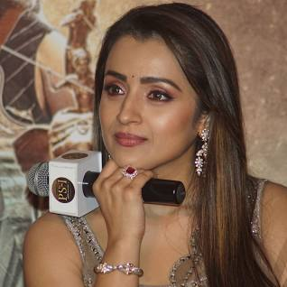
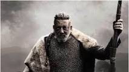
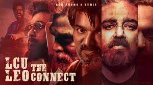

Vijay was born as Joseph Vijay Chandrasekhar on 22 June 1974 in Madras (now Chennai), Tamil Nadu. His father S. A. Chandrasekhar is a Tamil film director and his mother Shoba Chandrasekhar is a playback singer and carnatic vocalist. His father is of Christian Vellalar descent and his mother is Hindu.
LEO MOVIE DEtails
Lokesh Kanagaraj is an Indian film director and screenwriter who works in Tamil films. He started his career with a short film in the 2016 anthology Aviyal. He later directed his first feature film Maanagaram. He also created the Lokesh Cinematic Universe franchise with his films Kaithi
LEO
LEO
LEO
LEO CASTES DETAILS
Trisha, suriya, Denzil Smith, Priya Anand ,Jaffer Sadiq ,George Maryan Sandy Master, Vaiyapuri,VIJAY
Mathew Thomas,Mysskin Gautham Vasudev Menon,Arjun Sarja Manobala,Mansoor Ali Khan, Sandy Master Harish Uthaman, Sathyaraj
Trisha
tamil nadu heroni
Trisha Krishnan is an Indian model and actress who works predominantly in Tamil and Telugu films. She gained prominence after winning the 1999 Miss Chennai pageant, which marked her entry into the film industry.

SANJAY DUTT
Sanjay Balraj Dutt is an Indian actor who primarily works in Hindi cinema as well as a few Kannada, Tamil and Telugu Films

LEO TEAM IS CALLED ANTONY DASS
Arjun

Action King Arjun is deadly and ruthless as Harold Das in Thalapathy Vijay and Lokesh Kanagaraj's film Sanjay Dutt and Arjun are said to be playing brothers in the film, helmed by Lokesh Kanagaraj
VIJAY

Thalapathy Vijay celebrates his 49th birthday today. As the star turns a year older, the makers of his next - Leo, directed by Lokesh Kanagaraj have revealed his first look.
Thalapathy Vijay's first-look poster of Leo is as intense as it gets. It sees the star in action as wielding a bloody hammer. The poster also features a wolf by his side.
The upcoming film will mark Thalapathy Vijay's reunion with the director. Leo is reportedly the next film in Kanagaraj's action thriller universe. The film which will see Thalapathy Vijay as the titular Leo, will also star Trisha Krishnan in the lead role. The two will share screen space after 15 years.
leo is a part of lcu ?
is an Indian shared universe of action thriller films created by Lokesh Kanagaraj. [a] The first feature of the universe Kaithi was released in 2019 and the second installment Vikram was released on 3 June 2022. The universe follows an elaborate conflict between law enforcement officers and vigilantes in South India who are at war against a dangerously powerful drug cartel led by crime lord Rolex
lcu
lcu news next